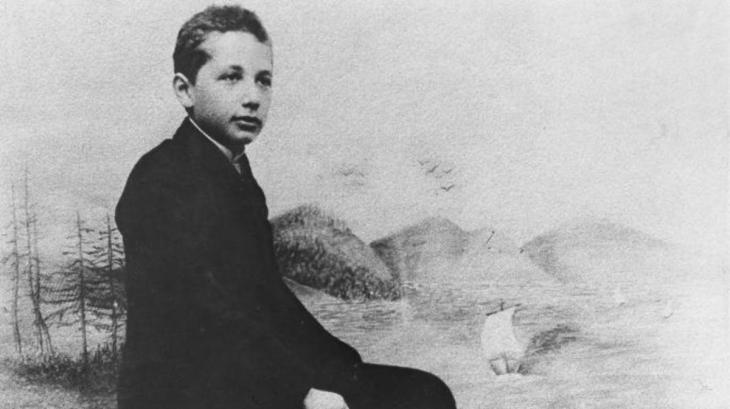
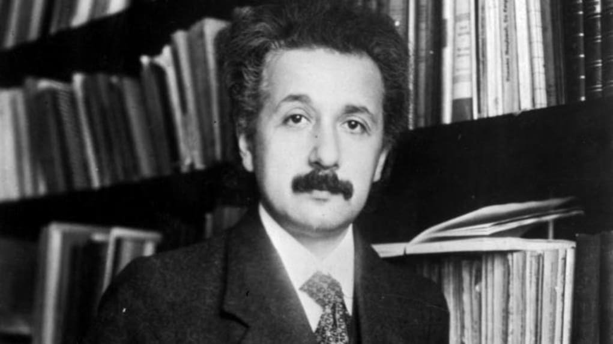
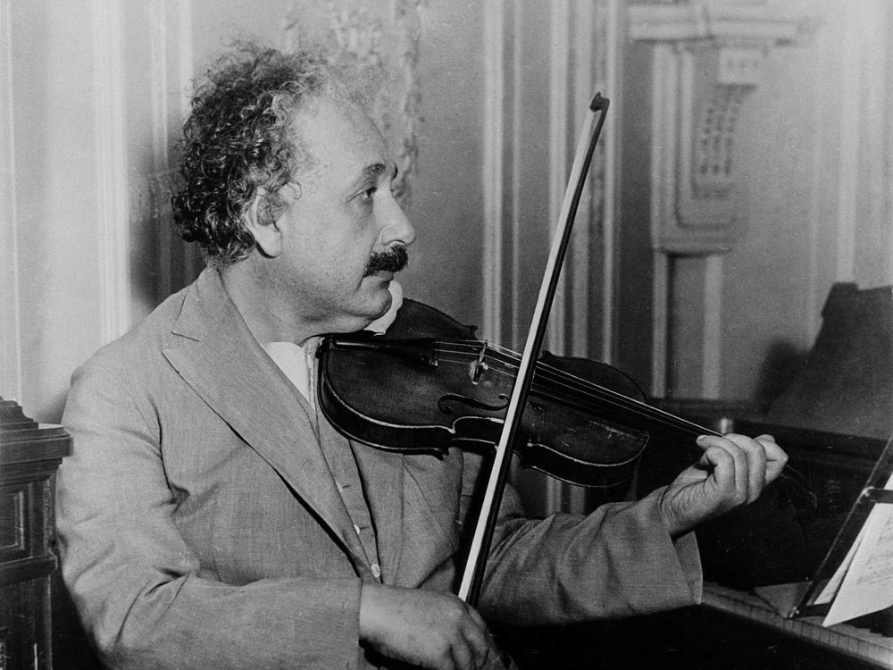
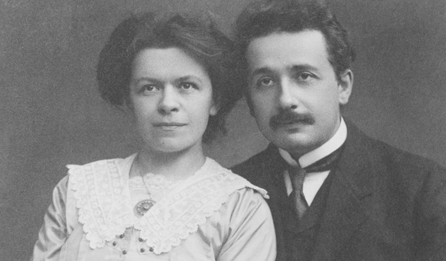
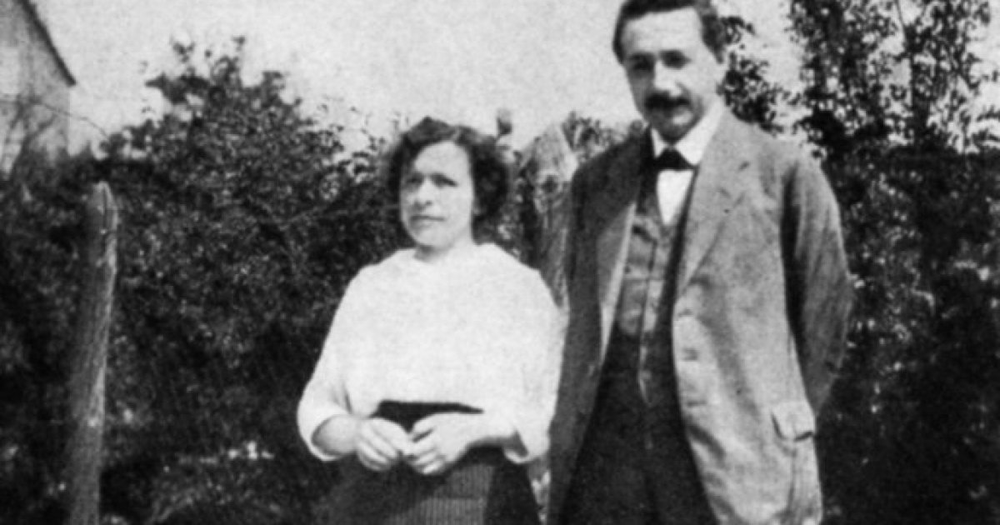
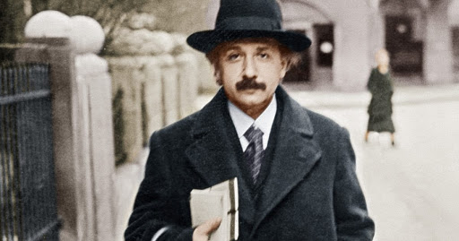
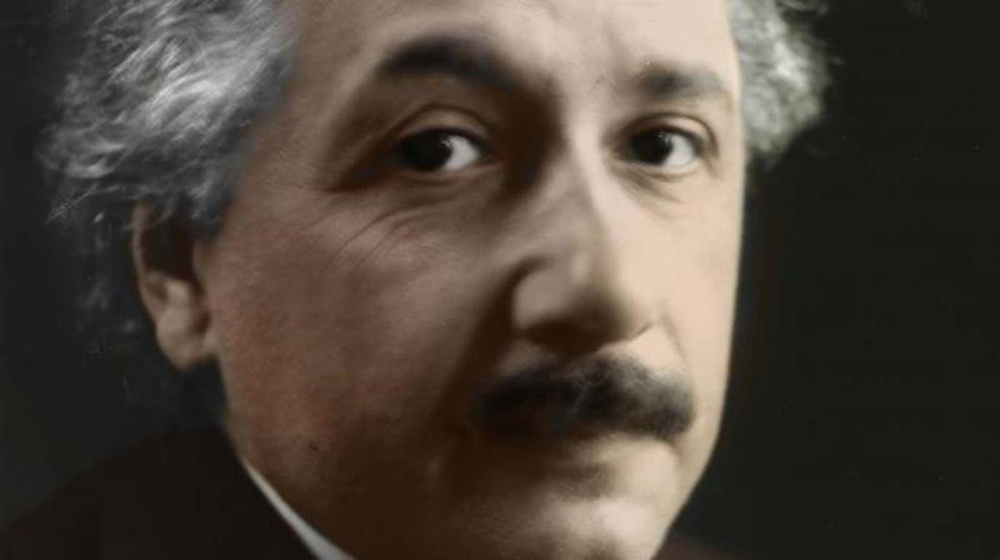
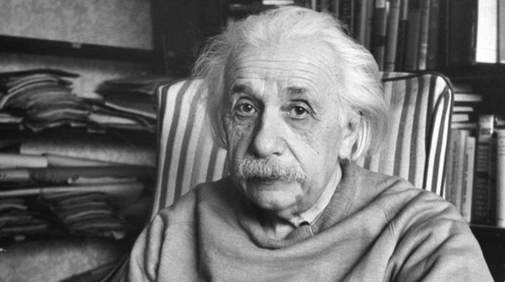
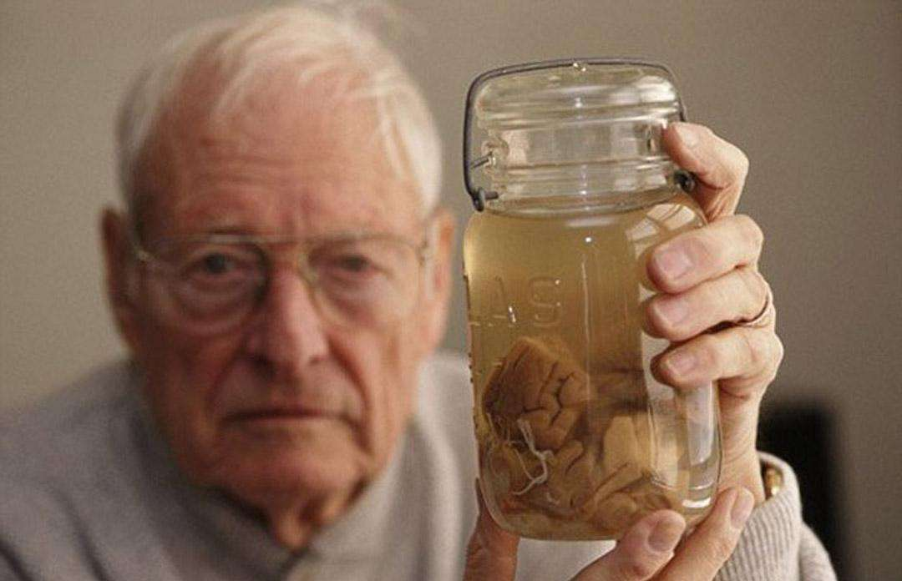

10 Things You Don't Know About Einstein
1. Einstein didn’t fail math as a child.
Underachieving school kids have long taken solace in the claim that Einstein flunked math as a youth, but the records show that he was actually an exceptional, if not reluctant, student. He scored high grades during his school days in Munich, and was only frustrated by what he described as the “mechanical discipline” demanded by his teachers. The future Nobel Laureate dropped out of school at age 15 and left Germany to avoid state-mandated military service, but before then he was consistently at the top of his class and was even considered something of a prodigy for his grasp of complex mathematical and scientific concepts. When later presented with a news article claiming he’d failed grade-school math, Einstein dismissed the story as a myth and said, “Before I was 15 I had mastered differential and integral calculus.”
2. It took Einstein nine years to get a job in academia.
Einstein showed flashes of brilliance during his years at the Zurich Polytechnic, but his rebellious personality and penchant for skipping classes saw his professors give him less than glowing recommendations upon his graduation in 1900. The young physicist later spent two years searching for an academic position before settling for a gig at the Swiss patent office in Bern. Though menial, the job turned out to be a perfect fit for Einstein, who found he could breeze through his office duties in a few hours and spend the rest of the day writing and conducting research. In 1905—often called his “miracle year”—the lowly clerk published four revolutionary articles that introduced his famous equation E=mc2 and the theory of special relativity. While the discoveries marked Einstein’s entrance onto the physics world stage, he didn’t win a full professorship until 1909—nearly a decade after he had left school.
3. Einstein played the violin.
Einstein’s mother, Pauline, was an accomplished pianist and wanted her son to love music too, so she started him on violin lessons. At first, Einstein hated playing the violin. When Einstein was 13-years old, he quickly changed his mind about the violin when he heard the music of Mozart. With a new passion for playing, Einstein continued to play the violin until the last few years of his life.
4. He married his first cousin.
Elsa, the second Mrs. Einstein, was the daughter of Albert’s mother’s sister, making them first cousins. They were also second cousins, as Elsa’s father and Albert’s father were cousins. Her maiden name was Einstein.
5. Einstein loved to smoke.

In 1950, after accepting a life membership in the Montreal Pipe Smokers Club, Einstein said he believed “that pipe smoking contributes to a somewhat calm and objective judgment in all human affairs.”
6. He offered his wife his Nobel Prize as part of their divorce settlement.
After his marriage to Mileva Maric hit the rocks in the early 1910s, Einstein left his family and moved to Berlin. He and Maric finally divorced several years later in 1919. As part of their separation agreement, Einstein promised her an annual stipend plus whatever money he might receive from the Nobel Prize—which he was supremely confident he would eventually win. Maric agreed, and Einstein later handed over a small fortune upon receiving the award in 1922 for his work on the photoelectric effect.
7. Einstein urged the building of the atomic bomb and later became a proponent of nuclear disarmament.
In the late-1930s, Einstein learned that new research had put German scientists on a path toward creating the atom bomb. The prospect of a doomsday weapon in the hands of the Nazis convinced him to set aside his pacifist principles and team up with Hungarian physicist Leo Szilard, who helped him write a letter urging President Franklin D. Roosevelt to conduct atomic research. Though Einstein never participated directly in the Manhattan Project, he later expressed deep regrets about his minor role in bringing about the Hiroshima and Nagasaki bombings. “Had I known that the Germans would not succeed in producing an atomic bomb, I never would have lifted a finger,” he told Newsweek. He went on to become an impassioned advocate of nuclear disarmament, controls on weapons testing and unified world government. Shortly before his death in 1955, he joined with philosopher Bertrand Russell in signing the “Russell-Einstein Manifesto,” a public letter that stressed the risks of nuclear war and implored governments to “find peaceful means for the settlement of all disputes between them.”
8. The FBI spied on him for decades.
Shortly before Hitler rose to power in 1933, Einstein left Berlin for the United States and took a position at the Institute for Advanced Study in Princeton, New Jersey. His support for pacifist, civil rights and left-wing causes had already drawn suspicion from J. Edgar Hoover’s FBI, and after his arrival on American shores, the Bureau launched what would eventually become a 22-year surveillance campaign. Agents listened to the physicist’s phone calls, opened his mail and rooted through his trash in the hope of unmasking him as a subversive or a Soviet spy. They even investigated tips that he was building a death ray. The project came up empty handed, but by the time Einstein died in 1955, his FBI file totaled a whopping 1,800 pages.
9. He was asked to be president of Israel.
Though not traditionally religious, Einstein felt a deep connection to his Jewish heritage and often spoke out against anti-Semitism. He was never a staunch Zionist, but when head of state Chaim Weizmann died in 1952, the Israeli government offered to appoint him as the nation’s second president. The 73-year-old wasted little time in declining the honor. “All my life I have dealt with objective matters,” Einstein wrote in a letter to the Israeli ambassador, “hence I lack both the natural aptitude and the experience to deal properly with people and to exercise official function.”
10. Einstein’s brain was stolen after his death.
Einstein died in April 1955 from an abdominal aortic aneurysm. He had requested that his body be cremated, but in a bizarre incident, Princeton pathologist Thomas Harvey removed his famous brain during his autopsy and kept it in the hope of unlocking the secrets of his genius. After winning a reluctant approval from Einstein’s son, Harvey later had the brain cut into pieces and sent to various scientists for research. A handful of studies have been conduced on it since the 1980s, but most have either been dismissed or discredited. Perhaps the most famous came in 1999, when a team from a Canadian university published a controversial paper claiming Einstein possessed unusual folds on his parietal lobe, a part of the brain associated with mathematical and spatial ability.